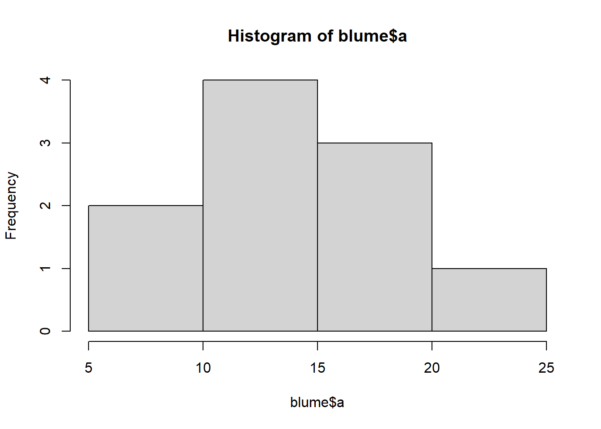
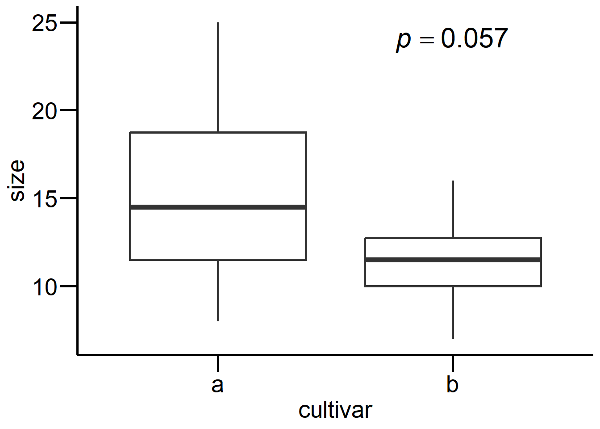
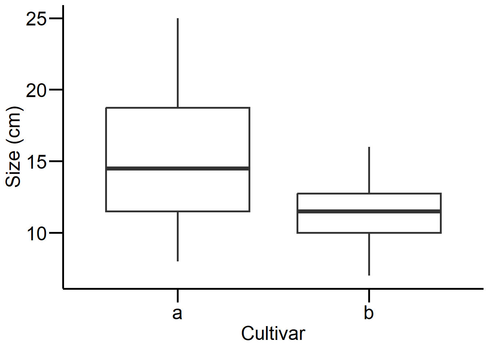

a b
Min. : 8.00 Min. : 7.00
1st Qu.:11.50 1st Qu.:10.00
Median :14.50 Median :11.50
Mean :15.30 Mean :11.40
3rd Qu.:18.75 3rd Qu.:12.75
Max. :25.00 Max. :16.00
boxplot(blume$a, blume$b)
boxplot(blume)
hist(blume$a)

hist(blume$b)
Zweiseitiger t-Test
t.test(blume$a, blume$b) # Zweiseitig "Test auf a ≠ b" (default)
Welch Two Sample t-test
data: blume$a and blume$b
t = 2.0797, df = 13.907, p-value = 0.05654
alternative hypothesis: true difference in means is not equal to 0
95 percent confidence interval:
-0.1245926 7.9245926
sample estimates:
mean of x mean of y
15.3 11.4
Einseitiger t-Test
t.test(blume$a, blume$b, alternative ="greater") # Einseitig "Test auf a > b"
Welch Two Sample t-test
data: blume$a and blume$b
t = 2.0797, df = 13.907, p-value = 0.02827
alternative hypothesis: true difference in means is greater than 0
95 percent confidence interval:
0.5954947 Inf
sample estimates:
mean of x mean of y
15.3 11.4
t.test(blume$a, blume$b, alternative ="less") # Einseitig "Test auf a < b"
Welch Two Sample t-test
data: blume$a and blume$b
t = 2.0797, df = 13.907, p-value = 0.9717
alternative hypothesis: true difference in means is less than 0
95 percent confidence interval:
-Inf 7.204505
sample estimates:
mean of x mean of y
15.3 11.4
Two Sample t-test
data: blume$a and blume$b
t = 2.0797, df = 18, p-value = 0.05212
alternative hypothesis: true difference in means is not equal to 0
95 percent confidence interval:
-0.03981237 7.83981237
sample estimates:
mean of x mean of y
15.3 11.4
# Varianzen ungleich: Welch's t-Test (siehe Titelzeile des R-Outputs!)t.test(blume$a, blume$b) # dasselbe wie var.equal = FALSE
Welch Two Sample t-test
data: blume$a and blume$b
t = 2.0797, df = 13.907, p-value = 0.05654
alternative hypothesis: true difference in means is not equal to 0
95 percent confidence interval:
-0.1245926 7.9245926
sample estimates:
mean of x mean of y
15.3 11.4
Gepaarter t-Test
# Gepaarter t-Test: erster Wert von a wird mit erstem Wert von# b gepaart, zweiter Wert von a mit zweitem von b ect.t.test(blume$a, blume$b, paired =TRUE)
Paired t-test
data: blume$a and blume$b
t = 3.4821, df = 9, p-value = 0.006916
alternative hypothesis: true mean difference is not equal to 0
95 percent confidence interval:
1.366339 6.433661
sample estimates:
mean difference
3.9
t.test(blume$a, blume$b, paired =TRUE, alternative ="greater")
Paired t-test
data: blume$a and blume$b
t = 3.4821, df = 9, p-value = 0.003458
alternative hypothesis: true mean difference is greater than 0
95 percent confidence interval:
1.846877 Inf
sample estimates:
mean difference
3.9
Two Sample t-test
data: size by cultivar
t = 2.0797, df = 18, p-value = 0.05212
alternative hypothesis: true difference in means between group a and group b is not equal to 0
95 percent confidence interval:
-0.03981237 7.83981237
sample estimates:
mean in group a mean in group b
15.3 11.4
t.test(size ~ cultivar, blume.long, paired =TRUE)
Paired t-test
data: size by cultivar
t = 3.4821, df = 9, p-value = 0.006916
alternative hypothesis: true mean difference is not equal to 0
95 percent confidence interval:
1.366339 6.433661
sample estimates:
mean difference
3.9
Definieren von mytheme mit allen gewünschten Settings, das man zu Beginn einer Sitzung einmal laden und dann immer wieder ausführen kann (statt des langen Codes)
mytheme <-theme_classic() +theme(axis.line =element_line(color ="black", size =1),axis.text =element_text(size =20, color ="black"),axis.title =element_text(size =20, color ="black"),axis.ticks =element_line(size =1, color ="black"),axis.ticks.length =unit(.5, "cm") )
t_test <-t.test(size ~ cultivar, blume.long)# Mit p-Wert im Plotggplot(blume.long, aes(cultivar, size)) +geom_boxplot(size =1) + mytheme +annotate("text",x ="b", y =24,label =paste0("italic(p) == ", round(t_test$p.value, 3)), parse =TRUE, size =8 )

# Ohne p-Wert im Plot (da dieser > 0.05)ggplot(blume.long, aes(cultivar, size)) +geom_boxplot(size =1) + mytheme +labs(x ="Cultivar", y ="Size (cm)")

Binomialtest
In Klammern übergibt man die Anzahl der Erfolge und die Stichprobengrösse
binom.test(84, 200) # Anzahl Frauen im Nationalrat (≙ 42.0 %; Stand 2019)
Exact binomial test
data: 84 and 200
number of successes = 84, number of trials = 200, p-value = 0.02813
alternative hypothesis: true probability of success is not equal to 0.5
95 percent confidence interval:
0.3507439 0.4916638
sample estimates:
probability of success
0.42
binom.test(116, 200) # Anzahl Männer im Nationalrat (≙ 58.0 %; Stand 2019)
Exact binomial test
data: 116 and 200
number of successes = 116, number of trials = 200, p-value = 0.02813
alternative hypothesis: true probability of success is not equal to 0.5
95 percent confidence interval:
0.5083362 0.6492561
sample estimates:
probability of success
0.58
binom.test(3, 7) # Anzahl Frauen im Bundesrat (≙ 42.9 %; Stand 2019)
Exact binomial test
data: 3 and 7
number of successes = 3, number of trials = 7, p-value = 1
alternative hypothesis: true probability of success is not equal to 0.5
95 percent confidence interval:
0.09898828 0.81594843
sample estimates:
probability of success
0.4285714
rownames(count) <-c("blond", "dunkel") # Benennen für Übersichtcolnames(count) <-c("blau", "braun") # Benennen für Übersichtcount # Check
blau braun
blond 38 11
dunkel 14 51
# Tests durchführenchisq.test(count)
Pearson's Chi-squared test with Yates' continuity correction
data: count
X-squared = 33.112, df = 1, p-value = 8.7e-09
fisher.test(count)
Fisher's Exact Test for Count Data
data: count
p-value = 2.099e-09
alternative hypothesis: true odds ratio is not equal to 1
95 percent confidence interval:
4.746351 34.118920
sample estimates:
odds ratio
12.22697
Quellcode
---date: 2023-10-30lesson: Stat1thema: Grundlagen der Statistikindex: 1format: html: code-tools: source: trueknitr: opts_chunk: collapse: false---# Stat1: DemoDownload dieses Demoscript via "\</\>Code" (oben rechts)## Daten generieren und anschauen```{r}a <-c(20, 19, 25, 10, 8, 15, 13, 18, 11, 14)b <-c(12, 15, 16, 7, 8, 10, 12, 11, 13, 10)blume <-data.frame(a, b)blumesummary(blume)boxplot(blume$a, blume$b)boxplot(blume)hist(blume$a)hist(blume$b)```## Zweiseitiger t-Test```{r}t.test(blume$a, blume$b) # Zweiseitig "Test auf a ≠ b" (default)```## Einseitiger t-Test```{r}t.test(blume$a, blume$b, alternative ="greater") # Einseitig "Test auf a > b"t.test(blume$a, blume$b, alternative ="less") # Einseitig "Test auf a < b"```## Klassischer t-Test vs. Welch Test```{r}# Varianzen gleich: klassischer t-Testt.test(blume$a, blume$b, var.equal =TRUE)# Varianzen ungleich: Welch's t-Test (siehe Titelzeile des R-Outputs!)t.test(blume$a, blume$b) # dasselbe wie var.equal = FALSE```## Gepaarter t-Test```{r}# Gepaarter t-Test: erster Wert von a wird mit erstem Wert von# b gepaart, zweiter Wert von a mit zweitem von b ect.t.test(blume$a, blume$b, paired =TRUE)t.test(blume$a, blume$b, paired =TRUE, alternative ="greater")```Dasselbe mit einer "long table"```{r}# "Long table" erstellenlibrary("tidyr")blume.long <-pivot_longer(blume, cols =c("a", "b"), names_to ="cultivar", values_to ="size")# Daten anschauensummary(blume.long)head(blume.long)boxplot(size ~ cultivar, data = blume.long)# Tests durchführent.test(size ~ cultivar, blume.long, var.equal =TRUE)t.test(size ~ cultivar, blume.long, paired =TRUE)```## Base R vs. ggplot2```{r}library("ggplot2")ggplot(blume.long, aes(cultivar, size)) +geom_boxplot()ggplot(blume.long, aes(cultivar, size)) +geom_boxplot() +theme_classic()ggplot(blume.long, aes(cultivar, size)) +geom_boxplot(size =1) +theme_classic() +theme(axis.line =element_line(size =1)) +theme(axis.title =element_text(size =14)) +theme(axis.text =element_text(size =14))ggplot(blume.long, aes(cultivar, size)) +geom_boxplot(size =1) +theme_classic() +theme(axis.line =element_line(size =1), axis.ticks =element_line(size =1),axis.text =element_text(size =20), axis.title =element_text(size =20) )```Definieren von mytheme mit allen gewünschten Settings, das man zu Beginn einer Sitzung einmal laden und dann immer wieder ausführen kann (statt des langen Codes)```{r}mytheme <-theme_classic() +theme(axis.line =element_line(color ="black", size =1),axis.text =element_text(size =20, color ="black"),axis.title =element_text(size =20, color ="black"),axis.ticks =element_line(size =1, color ="black"),axis.ticks.length =unit(.5, "cm") )``````{r}# Schöne Boxplots erstellenggplot(blume.long, aes(cultivar, size)) +geom_boxplot(size =1) + mythemet_test <-t.test(size ~ cultivar, blume.long)# Mit p-Wert im Plotggplot(blume.long, aes(cultivar, size)) +geom_boxplot(size =1) + mytheme +annotate("text",x ="b", y =24,label =paste0("italic(p) == ", round(t_test$p.value, 3)), parse =TRUE, size =8 )# Ohne p-Wert im Plot (da dieser > 0.05)ggplot(blume.long, aes(cultivar, size)) +geom_boxplot(size =1) + mytheme +labs(x ="Cultivar", y ="Size (cm)")```## BinomialtestIn Klammern übergibt man die Anzahl der Erfolge und die Stichprobengrösse```{r}binom.test(84, 200) # Anzahl Frauen im Nationalrat (≙ 42.0 %; Stand 2019)binom.test(116, 200) # Anzahl Männer im Nationalrat (≙ 58.0 %; Stand 2019)binom.test(3, 7) # Anzahl Frauen im Bundesrat (≙ 42.9 %; Stand 2019)```## Chi-Quadrat-Test & Fishers TestErmitteln des kritischen Wertes```{r}qchisq(0.95, 1)```## Direkter Test in R (dazu Werte als Matrix nötig)```{r}# Matrix mit Haarfarbe&Augenfarbe-Kombidnationen erstellen# 38 blond&blau, 14 dunkel&blau, 11 blond&braun,, 51 dunkel&brauncount <-matrix(c(38, 14, 11, 51), nrow =2)count # Checkrownames(count) <-c("blond", "dunkel") # Benennen für Übersichtcolnames(count) <-c("blau", "braun") # Benennen für Übersichtcount # Check# Tests durchführenchisq.test(count)fisher.test(count)```